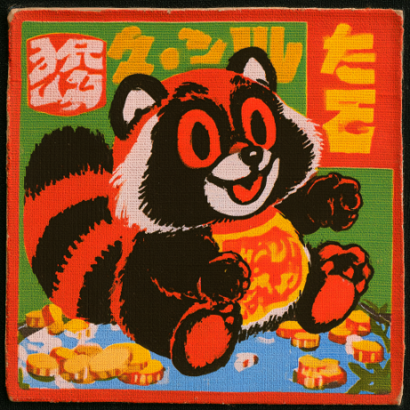
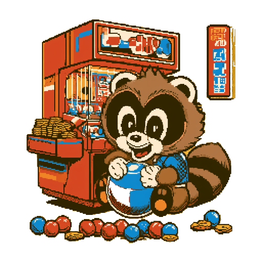
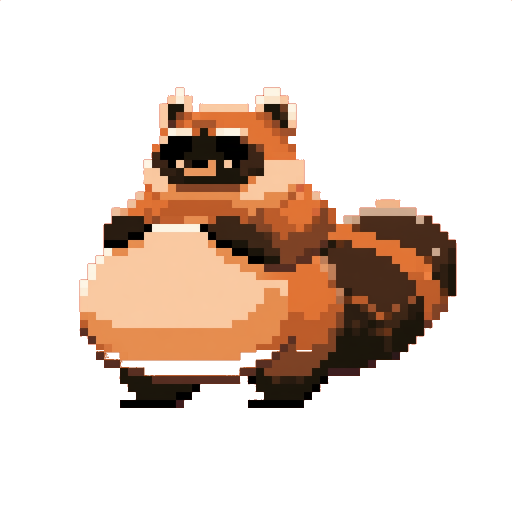

Kept in this browser and nowhere else — no account, no server, nothing leaves the machine. Clearing the save in OPTIONS erases all of it.
A score on the stock machine and a score on 裏物 are not the same claim — the quota multiplier alone runs from ×1.00 to ×2.10.

Every one of these is a real class of Japanese machine. A harder cabinet raises every floor's quota — and hands you a board that is already halfway built. Clearing floor twelve banks the win; the floors keep coming after it.

A pachinko machine gives you exactly one control: a dial that sets how hard a steel ball is fired up a rail. Everything after that is chaos and a random number generator you never touch. A quarter of surveyed players sit for nine hours or more. Some play open to close.
The gap is closed with presentation, and the presentation is applied neuroscience. Pachinkode builds all of it faithfully and then puts a switch on it.
WHAT IS REAL — the ball is 11.00 mm of solid steel, fixed exactly by Japanese law, which sets its mass only as a band — 5.4 to 5.7 g. 5.471 g is what that sphere actually weighs in plain carbon steel, and that is the figure the physics uses. Nail brass, pocket mouth widths, the four-deep pending queue, the 100-balls-per-minute launch ceiling, the ten-times cap on the kakuhen probability swing, and the payout bands the type test enforces are all regulation. Restitution against a nail is 0.50 — chrome steel on brass measures 0.52 in the laboratory (Sandeep et al., Canadian Geotechnical Journal 2021), corrected downward for an 11 mm ball. Nothing is scripted: the ball goes where the physics sends it.
WHAT IS MODELLED — the dopamine engine runs a temporal-difference learner over the board and reports prediction error asymmetrically, because real dopamine neurons do: about 270% above baseline for good surprises against 55% below for bad ones. A losing streak therefore cannot arithmetically cancel a win in that channel. Colour saturation is solved from Valdez & Mehrabian's arousal regression rather than picked. The near-miss moves pleasantness down and motivation up at the same time, which is the actual finding.
WHAT IS NOT HERE — an earlier draft raised the pitch of the nail impacts as anticipation built. No peer-reviewed work supports pitch contour as a reward cue in gambling; it is design folklore. It was cut. What the literature does support — win-paired, longer for bigger wins — is what you hear. (An audit of this page later caught two more claims smuggled into that same sentence. They were cut too.)
The trails are the point. Each ball is coloured by what the machine has learned a ball in that spot is worth, and the brightness is its confidence. Play long enough and a bright thread appears above the start pocket. Nobody drew it. The machine found it.
Built as an open foundation. The physics core, the economy calibrator and the board-trap auditor are all in the repository, and the handoff document names what the next builder should take up.